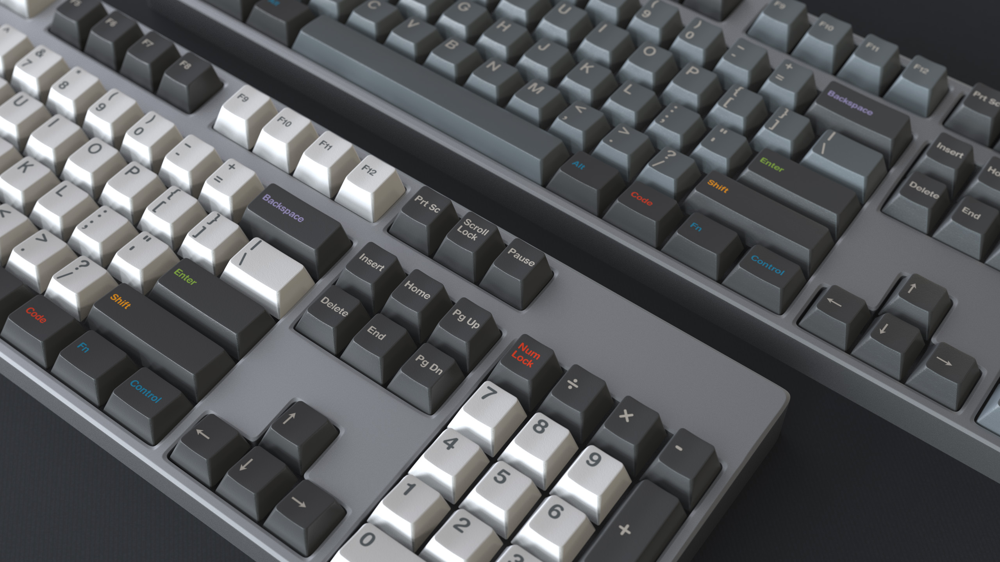
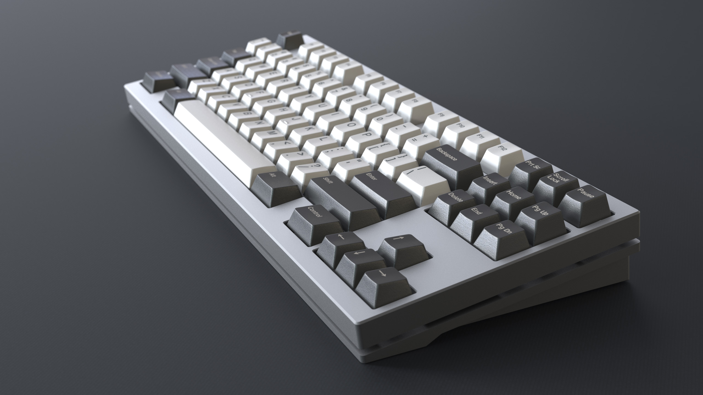
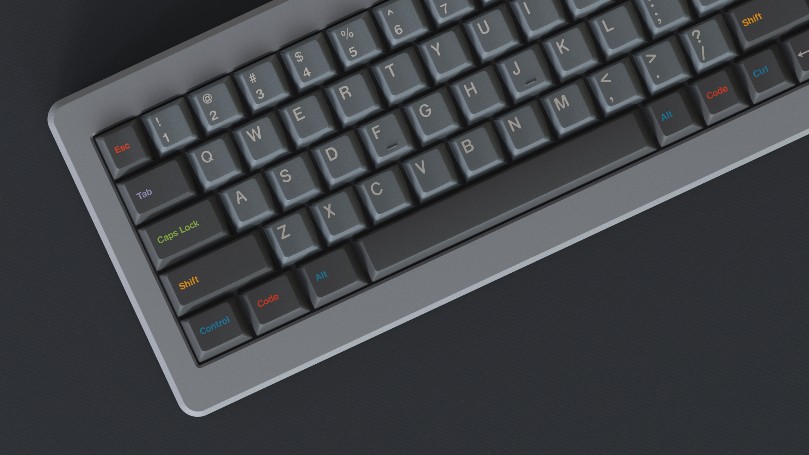
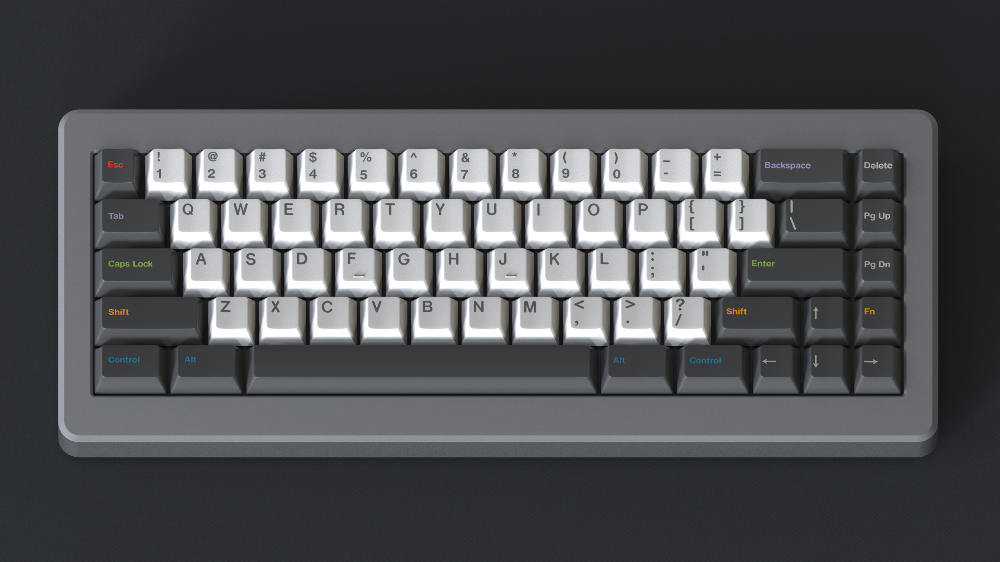
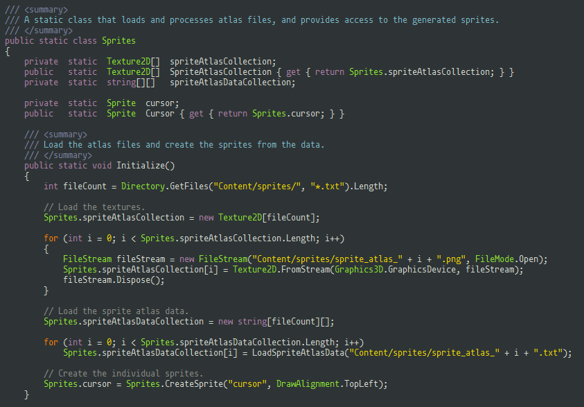
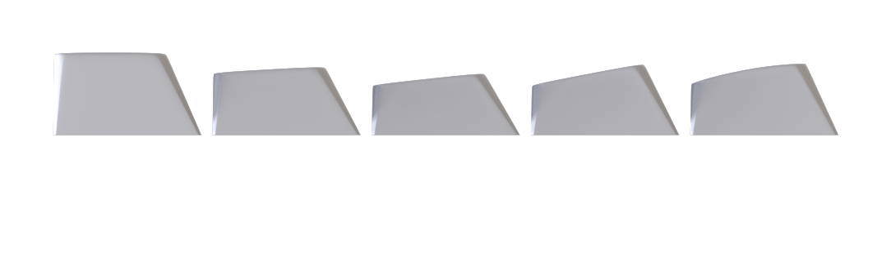
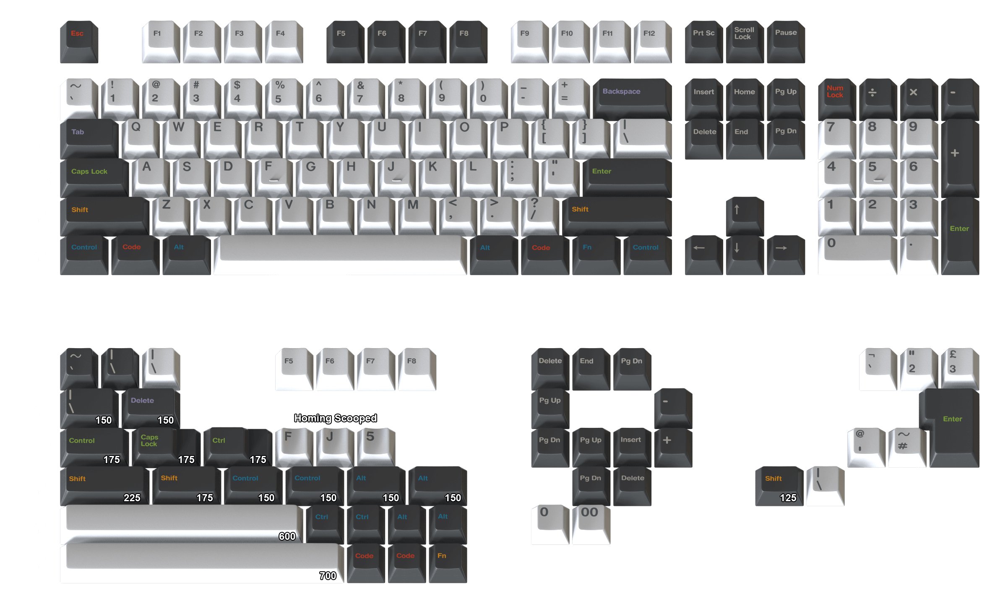
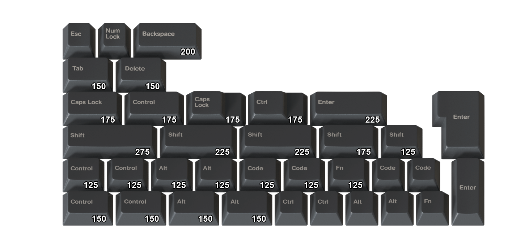
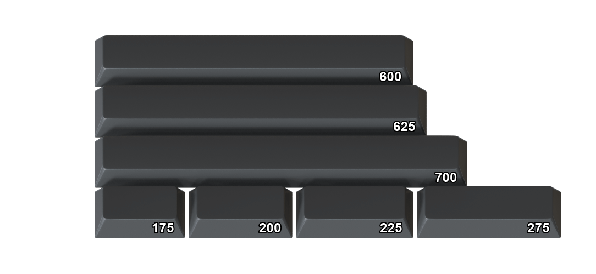

Introduction
GMK Oblivion is a keycap set for mechanical keyboards, designed after the code coloring scheme of the same name created by Paolo Borelli. The keycaps will fit any MX compatible stem.

Cherry profile
With a slightly different shape for each row, the Cherry profile is viewed as the best typing experience among many enthusiasts. If you haven't tried it yet, this is your chance!

Material and Colors
All keys are produced by GMK Electronic Design GmbH using durable ABS plastic. The double-shot technique allows the legends to be their own piece of plastic within the key instead of being simply printed on, making fading impossible. The colors used are partially from GMK's own selection, but most will be custom made based on the colors of the SA version of this set.
Base Sets
Each of the base sets totals at 155 keys to cover most keyboards out there, including UK-ISO layout. Ranging from Fullsize, TKL and Winkeyless to 96key, 75%, 65%, 60%, HHKB, Whitefox, Leopold FC660C/FC660M and Clueboard. Probably many more! You'll have the choice between light gray alphas that stand in perfect contrast to their surrounding modifier keys, and white ones if you prefer a higher one.
The expected price per base set is 130$.

{kind=link}
Monochrome Modifiers Addon
With this addon kit, you will be able to achieve a more classic look as you can replace all of the colored keys with a monochrome alternative.
The expected price for this addon kit is 50$.

{kind=link}
Spacebars
To cover a couple more keyboards with split spacebars, or if you prefer a fully modifier colored bottom row, you will have the option to purchase this kit additionally.
The expected price for these spacebars is 14$.

{kind=link}
When and where will the set be available?
The group buy is sheduled for April 2017, with delivery around Q3 2017. The vendor will be announced shortly. If you are more interested in the SA profile, there will be a group buy for that later this year. More details here.